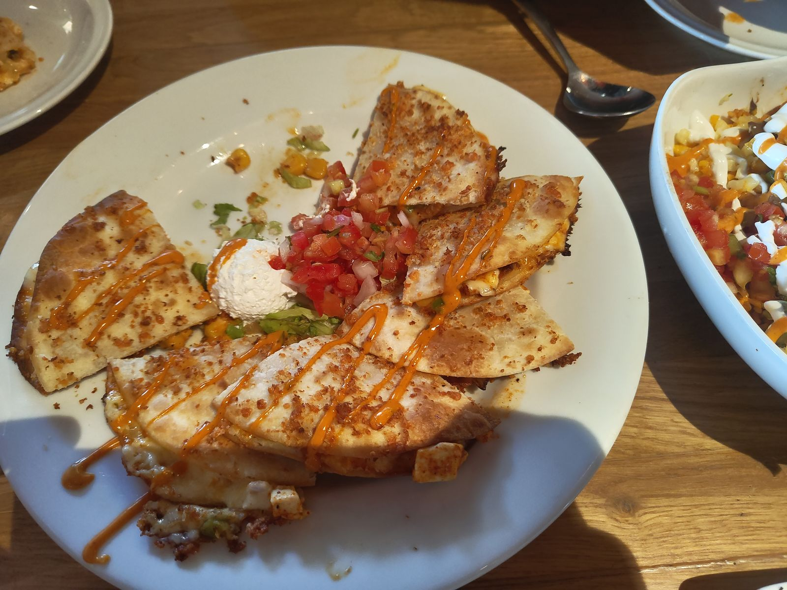
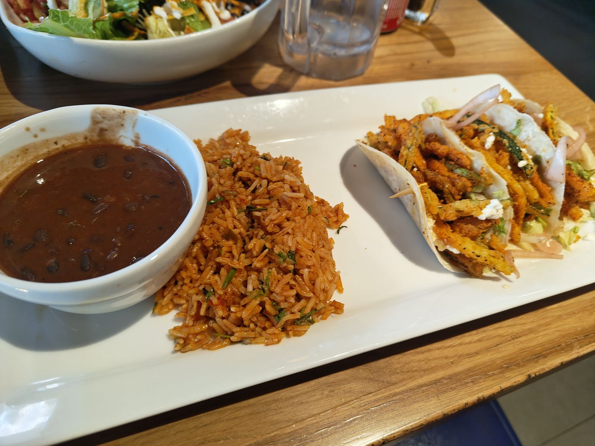
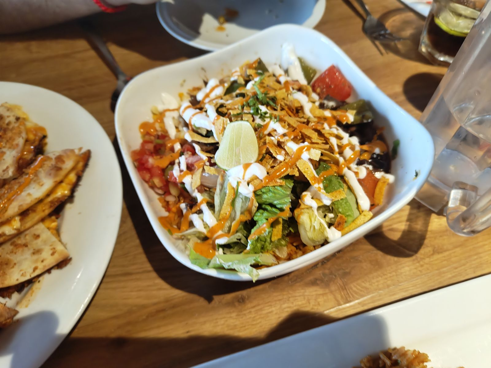
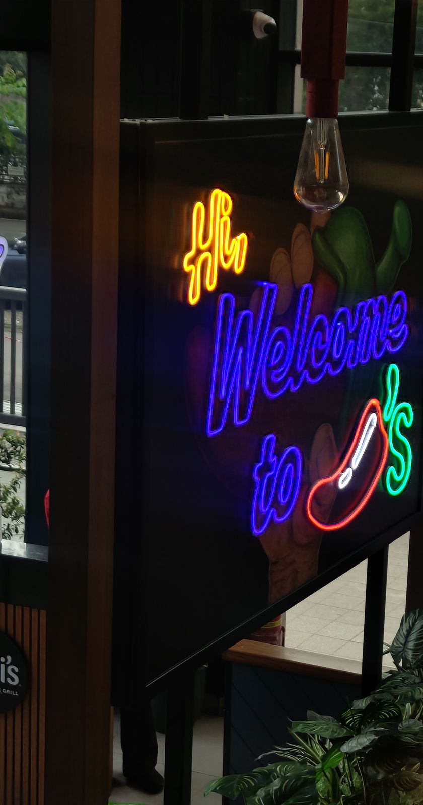

Chili's, HLP GalleriaNothing went wrong, and it still came second
PUBLISHED 26 AUGUST 2026
The Reorder
Three dishes. Two I would order again, and no complaint about the third.

In the Oven Fresh review I said there was a Chili's in the same mall, that I had eaten there too, and that I would get to it. This is that.
₹649 a head here against ₹650 upstairs. Twenty-two points against twenty-three. One rupee apart and one point apart, and the bakery won. I have been trying to work out what Chili's actually did wrong to lose that point, and the honest answer is nothing. Nothing went wrong here at all. That is the review.
I have not eaten at another Chili's, so I have nothing to compare this branch against. What I can say is that it is the only place I have scored that is not pretending to be something it is not. Colaba Canteen is doing an Irani cafe. Farzi is doing fine dining. Oven Fresh, to its enormous credit, is doing Chili's. Chili's is just doing Chili's, and this branch does not embarrass it.
There are two framed signs by the window. One says that whether to dip is a dumb question. The other says that if you leave hungry, that is on you. You can find that sort of thing tiresome, and I have, in other places. Here it is at least the same voice the menu is written in and the same voice the room is decorated in, which is more consistency of purpose than the ₹878 place in Connaught Place managed.
What to order
- OrderRoasted veg chipotle quesadillas, and use the dip
- OrderVeggie tacos
- SkipFresh Mex rice bowl
Three dishes, all vegetarian, which is worth saying before you take the Food score too seriously. I have not eaten anything off the meat side of this menu and the number at the top of this page does not know anything about it.
The food

Roasted veg chipotle quesadillas. The best thing on the table by a distance, and the dip that comes with it is doing real work rather than sitting there. This is the dish I would come back for, and it is the reason the Food score is an eight rather than a six.

Veggie tacos. Worth what they cost, nothing wrong with them, and I would order them again. Everyone else at the table was happy with them too.

Fresh Mex rice bowl. This is the interesting one. Nothing was wrong with it. It was worth its price. The others liked it. And I would not order it again.
That gap is the entire reason the Reorder exists as a separate number from the thirty. A dish can be perfectly competent, fairly priced, and still not be worth one of the three or four chances you get in a meal. The rice bowl did not fail. It just did not earn a second visit, and no score out of ten I could give it would tell you that.
One thing across all three: none of them arrived hot. Not cold, not sitting under a lamp, nothing you would send back, just not hot. I noticed it three times in a row, which is why it is here and not filed under nitpicking. Nothing tasted reheated, nothing was oversalted, nothing was undercooked. We finished everything and took nothing home.
The menu is too long. I understood every dish on it without asking, which is more than I can say for one or two places on this site, but there is more of it than anyone needs to choose from and nobody offered to narrow it down.
The room

Clean, comfortable an hour in, the right temperature, enough light to photograph food without the flash, and music sitting exactly where music should sit. The room is worth the prices on the menu, which is a low bar that two of the places on this site have failed.
The table was not big enough for what we had ordered. Three dishes and it was already a negotiation, and this is the second time that has cost a place a point with me.
I would bring a date here. I would bring my parents here. I would not sit here on my own for an hour. It is a room for a group, and it is honest about that.
The service
Somebody greeted us inside a minute and walked us to the table. After that it went quiet.
Nobody checked in once the food had landed. There was no one person looking after us, so you get whoever is nearest. I had to flag somebody down rather than catch an eye. Plates were cleared before everyone had finished, though only because we asked. Nobody said anything to us on the way out.
Nobody was rude and nothing was slow. This is what a three out of five looks like: the floor works, and that is all it does.
The Coke glass
Chili's serves its fountain Coke in plastic mugs. My Coke Zero came in a proper glass, because that is how the bottle is served, and my friend asked whether his could come the same way.
The waiter said the plastic mug is normal. My friend asked again. There was some back and forth about it. Then the waiter went and got a glass.
I have thought about whether that counts as somebody going out of their way for us, and it does not. Going out of your way means doing the thing before you have been argued into it. What it is instead is a floor that will say yes if you push, which is a different quality and a lesser one, and it is still better than being ignored. I noticed it, I remember it, and it did not move the score.
The bill
₹649 a head. No price on the menu surprised me, the bill was correct, it arrived quickly, there were no charges I had not counted on and no service charge went on quietly.
I would pay this exact bill again for this exact meal. That is two places out of the five I have scored where that is true, and both of them are in this mall.
The verdict
Here is the thing I keep coming back to. I did not think about this meal the next day. Not once. And when I sat down to score it, it came out at twenty-two, which is the second highest number on this site.
Those two facts are not in conflict. Chili's is a place where nothing goes wrong, and nothing going wrong is worth a great deal more than most restaurants manage. It just does not leave you with anything to carry home. Somebody at the table said they wanted to come back, and so do I, and I would not have been annoyed if I had driven half an hour for it.
If you are in that mall and spending too long deciding where to eat, stop deciding and go here. Order the quesadillas. That is not faint praise, it is the most useful sentence I can give you about this place.